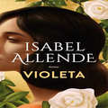
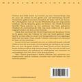

Korte info over boek
Foto's en kenmerken boek
Violeta
Kleine foto's
 Kenmerken boek
- € 25,50
- Roman
- Paperback
- Nederlands
Productomschrijving
Violeta werd geboren op een stormachtige dag in 1920, als het eerste meisje in een gezin met vijf broers. Vanaf het begin zal haar leven worden gekenmerkt door buitengewone gebeurtenissen. De gevolgen van de Eerste Wereldoorlog zijn nog steeds voelbaar wanneer de Spaanse griep de kusten van Zuid-Amerika bereikt, bijna precies op het moment van Violeta's geboorte. Dankzij haar vaders vooruitziendheid zal het gezin die crisis ongeschonden doorstaan. Al heel gauw komen er problemen. De Grote Depressie verstoort het luxueuze leven in de grote stad dat Violeta altijd heeft gekend. Haar familie verliest alles en moet zich terugtrekken in een desolaat deel van het land. Daar wordt Violeta groot en ontmoet ze haar eerste minnaar. In een brief aan iemand van wie ze zielsveel houdt, schrijft Violeta over de armoede en voorspoed, de verliezen en vreugdes, en over de grote liefdes van haar leven en het verwoestende liefdesverdriet dat daarna kwam. Belangrijke ontwikkelingen in de geschiedenis hebben haar turbulente leven bepaald: de strijd voor vrouwenrechten, de opkomst en ondergang van tirannen en uiteindelijk niet een, maar twee pandemieën.
Specificaties
- Auteur: Isabel Allende
- Taal: Nederlands
- Bindwijze: Paperback
- Publicatiejaar: 2022
- Uitgeverij: Wereldbibliotheek
- Aantal pagina's: 384
- ISBN: 9789028451933